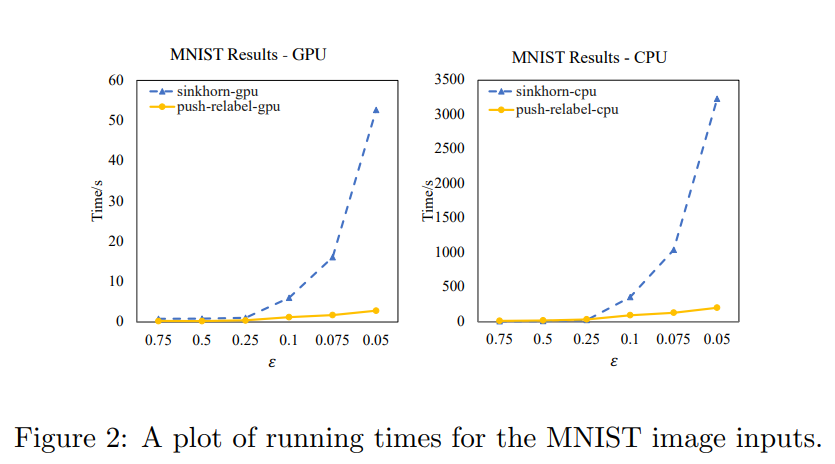

Optimal transport is quite expensive to compute exactly, so there have been recent desires for fast and reliable approximation algorithms. Here I analyze and describe a push-relabel based additive approximation algorithm for Optimal Transport. The paper I reference for this algorithm was originally submitted to the arXiv repository on Mar 7, 2022 by Nathaniel Lahn, Sharath Raghvendra (my former theory and algorithms professor), and Kaiyi Zhang. It is based on the push-relabel framework for min-cost flow problems. And unlike many other approaches, this algorithm can be parallelized for an even quicker execution time.
Please see the source below to check out the original paper.
[A Push-Relabel Based Additive Approximation for Optimal Transport]

Description
The provided paper details a simple combinatorial approach to find an \(\varepsilon\)-approximation of the Optimal Transport distance. The algorithm is based on the push-relabel framework for min-cost flow problems. This algorithm aims to reduce the numerical instabilities present in the Sinkhorn method of approximating optimal transport. Similar to before, in order to apply this algorithm, the input problem must be transformed so that all edge costs equal a \(\varepsilon\) integer multiple and all nodes are given a dual label. The transformation procedure is detailed below:
Transformation Procedure
Initially, the input will be a bipartite graph. Let \(G\) be this input graph, with two sets of nodes \(A\) and \(B\). Nodes in set \(A\) are referred to as demand nodes, and nodes in set \(B\) are referred to as supply nodes.
First, we must convert edge costs to integer multiples of \(\varepsilon\), where \(\varepsilon\) is some constant such that \(\varepsilon>0\). Let \(c(u,v)\) denote the cost of edge \((u,v)\), and \(\overline{c}(u,v)\) denote the transformed edge cost. For every edge \((u,v) \in A \times B\), we must transform the edge cost such that, \(\overline{c}(u,v) = \varepsilon\lfloor c(u,v) / \varepsilon \rfloor\)
In addition to this, we must assign dual weights to every vertex \(v \in A \cup B\). These dual weights must satisfy a set of feasibility conditions. A matching \(M\) is considered \(\varepsilon\)-feasible, if for every edge \((a,b) \in A \times B\):
- \(y(a) + y(b) \leq \overline{c}(a,b) + \varepsilon\) if edge \((a,b)\) is not in the matching \(M\).
- or \(y(a) + y(b) = \overline{c}(a,b)\) if edge \((a,b)\) is in the matching \(M\).
Algorithm
Dual weights for every supply node \(b\in B\) are initialized such that \(y(b) = \varepsilon\). Similarly, dual weights for every demand node \(a\in A\) are initialized such that \(y(a) = 0\). Finally, we will initialize the matching \(M\) to be empty. In other words, \(M = \emptyset\).
This algorithm executes in phases, wherein each phase consists of three steps. In each phase, the algorithm will construct a set of free supply nodes, consisting of all free nodes from set \(B\). Let \(B'\) denote this set of free supply nodes. If \(|B'| \leq \varepsilon n\), then \(M\) is an \(\varepsilon\)-feasible matching and the algorithm will arbitrarily match the remaining free vertices and return the new matching. In the case that \(|B'| > \varepsilon n\), the algorithm will continue by computing a subset of admissible edges with at least least one end point in the free supply node set \(B'\).
Let \(E\) denote the full set of admissible edges in the graph, and let \(E'\) denote the set of admissible edges with at least least one end point in the free supply node set \(B'\). It follows that \(E' \subseteq E\). Finally, let \(A'\) denote the set of demand nodes that participate in at least on edge in \(E'\). In other words \(A' = \{a|a \in A\) and \((a,b) \in E' \}\). Now, the following steps are executed by the algorithm:
Greedy Step: Computes a maximal matching \(M'\) in the graph \(G'(A' \cup B', E')\).
Matching Update: Let \(A''\) denote the set of nodes in \(A'\) which are present in both \(M\) and \(M'\). Also, let \(M''\) denote the set of edges in \(M\) that are incident on some node in \(A''\). The algorithm will add the edges of \(M'\) to \(M\) and remove the edges of \(M''\) from \(M\).
Dual Weight Update: Let \(\overline{y}(v)\) denote the updated dual weight of some node \(v\). For every edge \((a,b) \in M'\), the dual weight of node \(a\in A\) will be updated such that \(\overline{y}(a) = y(a) - \varepsilon\). Additionally, for every node \(b\in B\) in the set \(B'\) such that \(b\) is free with respect to \(M'\), the dual weight of node \(b\) will be updated such that \(\overline{y}(b) = y(b) + \varepsilon\).
Extending the Algorithm to the Optimal Transport Problem
With some instance \(\mathcal{I}\) of the optimal transport problem, we can scale the supplies and demands at each node by some multiplicative factor of \(\Theta\). Doing so will not delegitimize the optimal transport plan, as the cost of the optimal transport plan will simply be increased by a factor of \(\Theta\).
Now, we can choose \(\Theta = 4n/\varepsilon\), and transform supply and demand values to integer values. To transform the supply and demand values, we can just round supply values down and round demand values up to the nearest integers.
Next, we create a matching instance by replacing each node with a group of nodes, such that the total of number of replacement nodes equals the respective supply or demand value of the original node. Each node in the replacement group will be set to have a supply or demand value of exactly 1.
Then, let \(\mathcal{A}\) and \(\mathcal{B}\) be the multi-set of the demand and supply nodes we just produced. Let this new instance of the unbalanced matching problem be denoted by \(\mathcal{I'}\). Now, we can solve the problem instance \(\mathcal{I'}\) with the aforementioned algorithm.
Correctness
Before beginning an assessment of this algorithm’s correctness, we must define some invariants which the algorithm maintains. The invariants and their respective proofs follow:
(Invariant 1): For every node \(b\in B\), \(y(b) \geq 0\). In other words, every node in set \(B\) has a non-negative dual weight. Additionally, for every node \(a\in A\), \(y(a) \leq 0\). In other words, every node in set \(A\) is associated with a non-positive dual weight. Furthermore, every free node in set \(A\) is associated with a dual weight of 0.
Proof. Note that the invariant is true at the start of the algorithm. This is true because dual weights for all nodes in set \(B\) are initialized to \(\varepsilon\) and are thus non-negative, and dual weights for all nodes in set \(A\) are initialized to \(0\) and are thus non-positive. Also, all nodes in set \(A\) are initially free as the matching \(M\) is initialized to the empty set. Now, inductively assume that the invariant holds at the start of every phase. Next, we must show that the invariant continues to hold at the end of any given phase. Firstly, consider the dual weight update step. When updated, nodes from set \(B\) are increased by a factor of \(\varepsilon\), while nodes from set \(A\) are decreased by the same factor. Thus, it follows that, as execution progresses, dual weights for nodes in set \(B\) strictly increase and dual weights for nodes in set \(A\) strictly decrease. So, dual weights for nodes in \(B\) will remain non-negative, and dual weights for nodes in \(A\) will remain non-positive. Now, we must show that every free node in set \(A\) with respect to the matching \(M\) will continue to retain a dual weight of \(0\). Computing the maximal matching in the greedy step will not affect this condition. Regarding the matching update step, we can conclude that after the matching \(M\) has been updated, any node of set \(A\) which was matched before the update will remain matched post-update. Because of this, we can further conclude that dual weights for every free node in set \(A\) retain zero values. Finally, regarding the dual weight update step, dual weights of nodes from set \(A\) are only reduced if said node it matched in \(M'\). And, since the previous step will have added edges of \(M'\) to \(M\), every node in \(A\) whose dual weight is updated will be matched in \(M\) post-update. Thus, dual weights for all free nodes in set \(A\) will retain a zero value. ◻
(Invariant 2): The matching \(M\) and a set of dual weights maintains \(\varepsilon\)-feasibility.
Proof. Note that the invariant is true at the start of the algorithm, as all \(\varepsilon\)-feasibility conditions are maintained in initializing \(M\) and the set of dual weights. Now, inductively assume that the invariant holds at the start of every phase. Next, we must show that the invariant continues to hold at the end of any given phase. So, we must show that edges remain feasible through a phase. To do this, we need to show that the slack of all edges remains non-negative and all edges in the matching \(M\) have zero slack. Let \(s(a,b)\) denote the slack of edge \((a,b)\). Computing the maximal matching in the greedy step will not affect this condition. Only the matching update and dual weight update steps may violate feasibility. Consider an edge \((a,b)\) which is feasible but not admissible at the beginning of a phase. In other words \(s(a,b) \geq \varepsilon\). As the matching \(M'\) contains only admissible edges, edge \((a,b)\) cannot be in \(M'\) nor \(M\). Now, the dual weights of nodes \(a\) and \(b\) may be updated. If the dual weight \(y(a)\) is updated, \(y(a)\) will only be reduced by \(\varepsilon\), in turn increasing \(s(a,b)\) by \(\varepsilon\). Here, \(s(a,b)\) will retain a non-negative slack, and so feasibility is maintained. If the dual weight \(y(b)\) is updated, \(y(b)\) will only be increased by \(\varepsilon\), in turn decreasing \(s(a,b)\) by \(\varepsilon\). As, \(s(a,b) \geq \varepsilon\), \(s(a,b)\) will still be non-negative, and so feasibility is maintained. So, in the case that edge \((a,b)\) is not admissible at the beginning of a phase, feasibility is maintained. Next, we must consider the case where edge \((a,b)\) is admissible at the start of the phase. At the end of the phase, either \((a,b)\) is or is not present in the updated matching \(M\). Both of these cases are detailed below:
If \((a,b)\) is present in \(M\), there are two possible cases. Either, \((a,b)\) was in \(M\) before the update or \((a,b)\) is an edge in \(M'\) which was added to the matching and thus exists in \(M\) post-update. These further cases are detailed below.
If \((a,b)\) was in \(M\) before the update, dual weights for nodes \(a\) and \(b\) remain unchanged. Thus, feasibility is maintained.
If \((a,b)\) is an edge in \(M'\) which was added to the matching during the update, then \((a,b) \in E'\) was a non-matching admissible edge prior to the update. So, \(y(a)+y(b) = \overline{c}(a,b) + \varepsilon\). When the dual weights for both nodes are updated, \(y(a)\) will be reduced by \(\varepsilon\) and \(y(b)\) will remain unchanged, maintaining feasibility. So, once the phase completes, every edge of \(M\) retains feasibility.
If \((a,b)\) is not present in \(M\), there are two possible cases to explore. Either node \(b\) is not present in set \(B'\) or b is present in set \(B'\). These further cases are detailed below.
In the case that node \(b\) is not present in set \(B'\), the edge \((a,b)\) satisfies feasibility at the start of a phase. When updating the dual weights of these nodes, only nodes which are present inset \(B'\) are updated. And so, since node \(b\) is not in \(B'\), \(y(b)\) is left unchanged. Regarding node \(a\), \(y(a)\) may be decreased by \(\varepsilon\), in turn increasing \(s(a,b)\). Thus, feasibility is always maintained.
In the case that node \(b\) is present in set \(B'\), since \((a,b)\) is admissible and is not in \(M\) post-update, \((a,b)\) cannot be in \(M'\). Now, consider the fact that \(M'\) is a maximal matching. Because of this, node \(a\) is matched with some other node \(b' \in M'\). So, if \(y(b)\) is updated, and is thus increased by \(\varepsilon\), \(y(a)\) will also updated, and thus will be decreased by \(\varepsilon\). Due to this, \(s(a,b)\) remains non-negative, and feasibility is maintained.
◻
Now, finally that the invariants have been proven, we can continue to assess this algorithm’s correctness. Rounding edge costs in the manner described previously will introduce an error of \(\varepsilon n\). Then, after computing a matching of size at least \((1-\varepsilon)n\), when arbitrarily matching the last \(\varepsilon n\) vertices, we incur an error no greater than \(\varepsilon n\). Finally, with reference to the following lemma (Lemma 3.1), we can conclude that the total error in the computed matching is no greater than \(+3\varepsilon n\). And thus, the matching is \(\varepsilon\)-feasible.
Lemma 3.1: The \(\varepsilon\)-feasible matching of size at least \((1-\varepsilon)n\) that is computed by the algorithm is within an additive error of \(\varepsilon n\) from the optimal matching with respect to the rounded edge costs.
Proof. Let \(M\) be the matching computed by the algorithm. Furthermore, let \(M_{OPT}\) be the optimal matching with respect to the rounded edge costs. Considering the first feasibility condition and the fact that dual weights for all free vertices with respect to \(M\) are non-negative we can conclude that: \(\sum_{(a,b)\in M} \overline{c}(a,b) = \sum_{(a,b)\in M}(y(a) + y(b)) \leq \sum_{v\in A\cup B} y(v)\). Now, as \(M_{OPT}\) is a perfect matching, we can further conclude from the second feasibility condition that: \(\sum_{v\in A\cup B} y(v) = \sum_{(a,b)\in M_{OPT}}(y(a) + y(b)) \leq \sum_{(a,b)\in M_{OPT}}\overline{c}(a,b) + \varepsilon n\). And so, \(\sum_{(a,b)\in M} \overline{c}(a,b) \leq \sum_{(a,b)\in M_{OPT}}\overline{c}(a,b) + \varepsilon n\). Thus, conclusively, the matching \(M\) is within an additive error of \(\varepsilon n\) from the optimal matching with respect to rounded edge costs. ◻
Efficiency
Before beginning an assessment of this algorithm’s efficiency, we must provide some lemmas. The lemmas and their respective proofs follow:
Lemma 3.2: For any node \(v \in A \cup B\), \(|y(v)| \leq (1+2\varepsilon\).
Proof. Note that the algorithm only ever increases the magnitude of any given dual weight. So, it is sufficient to show that the claim holds at the end of the algorithm. For all nodes in \(A \cup B\), there are only two cases to consider. Either, a node is present in set \(A\) or in set \(B\). The two cases are described below:
Let \(a\) be some node such that \(a \in A\). If node \(a\) is free, then the claim holds true due to Invariant 1. Now, if node \(a\) is not free, and is thus matched to some node \(b \in B\), edge \((a,b)\) is feasible. Because edge \((a,b)\) is feasible, we can conclude that \(y(a) = \overline{c}(a,b) - y(b) \geq -y(b) \geq -(1+2\varepsilon)\). So, \(|y(a)| \leq (1+2\varepsilon)\).
Let \(a\) be some free node at the start of the final phase of the algorithm such that \(a \in A\). We know, from Invariant 1, that \(y(a) = 0\). Now, for every vertex \(b \in B\), edge \((a,b)\) satisfies feasibility. And so, \(y(b) \leq \overline{c}(a,b) + \varepsilon - y(a) = \overline{c}(a,b) + \varepsilon \leq 1 + \varepsilon\). So, since dual weights for nodes in set \(B\) are only ever updated adding \(\varepsilon\), the dual weight for any node \(b \in B\) when the algorithm reaches completion is at most \(1 + \varepsilon + \varepsilon = (1 + 2\varepsilon)\).
◻
Lemma 3.3: The sum of the magnitude of the dual weights increases by at least \(\varepsilon n_i\) in each phase.
Proof. Let \(b\) be some node at the beginning of some phase such that \(b\in B'\). Now, once the phase completes, there are two cases we must consider. Either, node \(b\) is still free or it has been matched. Both cases are detailed below:
In the case that node \(b\) is still free once the phase completes, \(|y(b)|\) increases by \(\varepsilon\).
In the case that \(b\) is no longer free once the phase completes, and thus has been matched to some arbitrary node \(a \in M'\), \(|y(a)|\) increases by \(\varepsilon\) as well.
So, conclusively, we can see that each node in set \(B'\) causes the dual weight magnitude of some vertex to increase by exactly \(\varepsilon\). Thus, the total dual weight increase in each phase is at least \(\varepsilon n_i\). ◻
Lemma 3.4: The execution time of each phase is \(O(n \times n_i)\).
Proof. Note that computing the set of free vertices at the start of each phase can be done in \(O(n)\) time. Now, consider the greedy step. Initially, the algorithm must compute a maximal matching in the graph \(G'(A' \cup B', E')\). To construct this graph, we can scan over all edges incident to nodes in \(B'\), taking \(O(n \times n_i)\) time. Then, the algorithm will find the maximal matching by processing each free node \(b \in B'\). The algorithm will then attempt to match node \(b\) by finding the first edge \((a,b)\) in the graph such that \(a\) is not present in \(M'\). If such an edge is found, it is then added to \(M'\). If such an edge cannot be found, then node \(b\) cannot be matched in \(M'\). Once every node in \(B'\) has been processed, \(M'\) is maximal. In this step, the only procedure significant to the execution time is that which constructs graph \(G'\) in \(O(n \times n_i)\) time. So, this step executes in \(O(n \times n_i)\) time.
Next, consider the matching update and dual weight update steps. Since any matching has a size which is \(O(n)\) and each node’s dual weight is updated at most once within any given phase, executing both of these steps will cost \(O(n)\) time. Finally, the execution time of the entire phase comes out to be \(O( (n \times n_i) + n ) = O(n \times n_i)\). ◻
Now, given the lemmas, we can continue assessing the overall execution time of the algorithm. Suppose that the algorithm completes \(t\) phases during runtime. Let \(n_i\) denote the size of \(B'\) in phase \(i\) where \(i\) is some integer such that \(1 < i \leq t\). From the termination condition, we can conclude that phase \(i\) is only executed if \(n_i > \varepsilon n\). In other words, if the size of \(B'\) is more than \(\varepsilon n\), the algorithm terminates. Now, from Lemma 3.2, we know that the magnitude of the dual weight of any node is at most \((1+2\varepsilon)\). So, we use this as an upper bound for the magnitude of the dual weight of any given node. Furthering this concept, we can see that the sum total of the dual weight magnitudes over all nodes is at most \(n(1+2\varepsilon)\). Also, from Lemma 3.3, we know that for some phase \(i\), the sum total of the dual weight magnitudes over all nodes increases by at least \(\varepsilon n_i\).
With these observations, it follows that: \(\sum_{i=1}^{t} n_i \leq n(1+2\varepsilon)/\varepsilon\). And, \(n(1+2\varepsilon)/\varepsilon\) is \(O(n/\varepsilon)\). Now, from Lemma 3.4, we know that the execution time of any given phase is \(O(n \times n_i)\). So, the total sequential execution time of the algorithm becomes \(O(n \cdot \sum_{i=1}^{t} n_i) = O(n \cdot \frac{n}{\varepsilon}) = O (n^2/\varepsilon)\).
Regarding the execution time of the algorithm when run in parallel, note that the matching update and dual weight update steps are trivially parallelizable, making them execute in constant time. Thus, with a classical parallel program to find maximal matchings for the greedy step in \(O(\log n)\) time, the execution time of the program becomes \(O(\log n/\varepsilon^2)\).